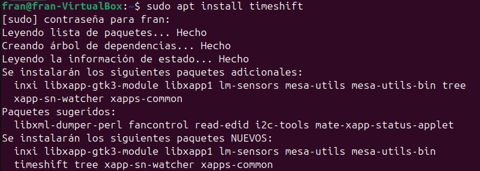

Sprint1
Instal·lació Ubuntu 24.02
Primer que tot, hem de comfigurar la maquina virtual. Les espesificacions que he posat son les següentes.

Per a configurar la xarxa el que he fet a sigut crear una xarxa Nat.

Tot seguit li he posat la ISO.

Li indico la xarxa.

Una vegada iniciada la maquina i fet el proses inicial li he indicat "instalació manual"

Li he posat les següents partisions.

Li dono a instal·lar i ja estaria.

Configuració Xarxa
La xarxa en Ubuntu es pot configurar de dues formes diferents.
Entorn Gràfic: En l'entorn gràfic es pot configurar amb DHCP o de forma manual. En aquest cas és de forma manual.
El que s'ha de configurar és: La direcció IP, Màscara de xarxa, Porta de enllaç i el DNS.
Fent un "ip a" es pot veure com s'han aplicat els canvis.
I amb el ping es pot veure com si ens dona accés a internet.
Per comandes:
Per configurar-ho per comanes és en la carpeta "/etc/netplan/01-network-manager-all.yaml"
Les modificacions són les següents:
Amb "ip a" podem veure com s'han aplicat els camvis.

I fent ping podem veure com ens dona acces a internet.

Punts de restauració
Per fer punts de restauració hem utilitzat un programa que es diu "Timeshift"
El primer que hem fet ha sigut instal·lar el programa amb la comanda "sudo apt install timeshift"

Una vegada instal·lada entrem dintre.

Ens dona a elegir entre dues opcions, RSYNC i BTRFS. Escollim la primera opció.

Seleccionem el lloc on volem que es guardin les nostres instantànies.

Li indiquem quan volem que es faci la instantània i el número d'instantànies que volem guardar.
Li indiquem que volem guardar el directori "/home".
Hi ha una altra forma en el Ubuntu 24.04. Pero nomes deixa fer instantanies de directoris, no de tot el sistema. La manera consisteix en una funcio nova que porta el Ubuntu 24.04, que es nomes si el gestor de fitxers es el BTRFS, i no el ext4 com a sigut fins ara.
GRUB
Per a aquesta practica el que hem fet primer que tot ha sigut esborrar el grub manualment.

A continuació he provat a inciar el sistema per veure si m'he carregat el Grub.

Tots seguit apagem la VM i li introduim la ISO del "Bootrepair"

Cuan se'ns obri el programa, li indiquem que volem reparar.
Per ultim se'ns obrira el sistema i ja estara reparat.

Per a l'altre programa l'inici a sigut el mateix. Carregar-nos el "Grub" de forma manual i incerir la ISO del super grub. Una vegada iniciat el programa, el que hem de fer es donar-li clic a "Boot manually".

Tot seguit li donem clic a "Operating Systems".

A continuació indiquem la primera opció.
Una vegada dintre del sistema tenim que instal·lar el grub de forma manual.

I per últim upgradegem el grub.

Des/Instalacio Apricacions
Hi ha diverses maneres d'instal·lar programes en Ubuntu, aquestes són algunes:
dpkg
Per a instal·lar programes amb dpkg el que hem de fer, primer es descarregarnos un fitxer .deb per a posteriorment posar la segunet comanda:
I podem exectuar el programa amb el nom del mateix.

Apt Repositori
Primer que tot he actualitzat el sistema amb una comanda que emborrara automàticament els packets que no s'utilitzen.

A continuació hem de instal·lar la dependencia per a poder afegir el repositori de VirtualBox.

Tot seguit li hem de afegir el repositori.

I creem y afegim una clau al repositori.

Actualitzem el sistema per a que es guardin el camvis.

Per acabar instal·lem el VirtualBox.


Una vegada instal·lat el que hem fet a sigut desisntal·larlo.


Aptitude
Tot seguit el que hem fet a sigut instal·lar el gimp utilitzant Aptitude. Per fer-ho el primer que hem fet ha sigut instal·lar el aptitude.

A continuació utilitzat la comanda aptitude hem instal·lat el gimp.

Per ultim he desinstal·lat el gimp.
tar.gz
El primer que hem de fer és instal·lar el fitxer tar.gz des de la paguina oficial de discord.

A continuació hem de descomprimir el fitxer.

Hem de moure el fitxer Discord al directori /opt/.

Per acabar posem aquesta comanda i executem discord.

Escollir versió
Primer que tot mirem la versió que tenim instal·lada del smplayer.

A continuació el que hem fet ha sigut afegir el repositori smplayer.
Hem actualitzat el sistema.

Al tornar a veure la versio es pot veure que esta actualitzat.
Per tornar a la versió anterior el que hem de fer es afegir les seguents linies de codi en el fitxer: etc/apt/preferences.d

Podem veure com a cambiat la prioritat de les versions.